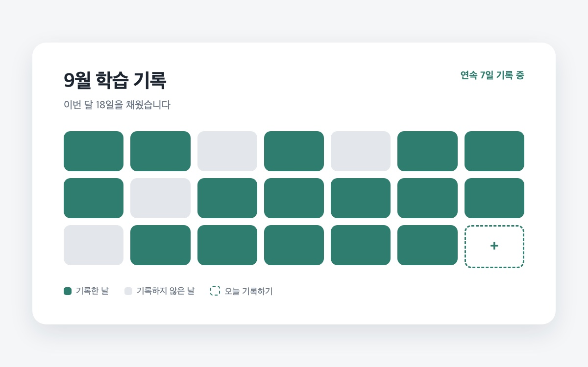

서비스 소개
계획표 대신, 채워진 칸
공부를 시작할 때는 누구나 계획을 세우지만 며칠만 지나면 계획표는 열어보지 않게 됩니다. 기록이 남지 않으니 얼마나 했는지도, 잘하고 있는지도 알 수 없습니다.
하루한칸은 기록을 한 줄로 줄인 학습 습관 트래커입니다. 과목과 공부한 시간만 남기면 달력의 칸 하나가 채워지고, 채워진 칸이 늘어나는 것으로 꾸준함을 확인합니다.

서비스 정보
주요 기능
-
한 줄 기록
과목과 공부한 시간만 입력하면 끝입니다. 10초면 오늘 칸이 채워집니다.
-
한눈에 보는 달력
한 달을 한 화면에서 봅니다. 어느 요일에 자주 빠지는지 바로 보입니다.
-
연속 일수 알림
며칠 연속으로 기록했는지 보여 주고, 기록이 없는 날 저녁에 한 번만 알립니다.
이용 방법
- 이번 학기에 공부할 과목을 등록합니다.
- 공부를 마치면 과목과 시간을 한 줄로 기록합니다.
- 달력에서 채워진 칸과 연속 일수를 확인합니다.
자주 묻는 질문
- 하루를 빠뜨리면 기록이 초기화되나요?
- 아닙니다. 연속 일수만 다시 1일부터 세고, 지금까지 채운 칸은 그대로 남습니다.
- 공부 시간을 분 단위로 적어야 하나요?
- 10분 단위면 충분합니다. 정확한 시간보다 매일 남기는 것이 목적입니다.
- 알림을 받지 않고 쓸 수도 있나요?
- 네. 알림 설정에서 저장하지 않으면 알림 없이 기록만 할 수 있습니다.
알림 설정
기록이 없는 날 저녁에 한 번만 알려 드립니다. 받고 싶은 시간을 미리 저장해 두세요.
아직 알림 시간을 저장하지 않았습니다.
이용 설정
화면 테마
밤에 기록할 때 눈이 덜 부시도록 어두운 테마로 바꿀 수 있습니다.
0 / 10
안내를 확인해야 기록을 시작할 수 있습니다.
오늘 기록 남기기
기록은 내 기기에만 저장됩니다. 이용 설정에서 이 안내를 확인하면 오늘 기록을 시작할 수 있습니다.
안내 확인하러 가기1 / 3 · 과목과 시간
이번 주 기록
최근 7일의 칸입니다. 칸을 누르면 그날 남긴 기록을 볼 수 있습니다.
소식 받기
아직 준비 중입니다. 이메일을 남기시면 출시하는 날 가장 먼저 알려 드립니다.